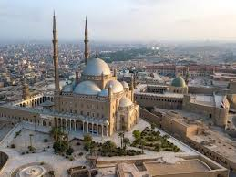
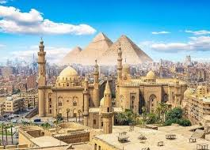
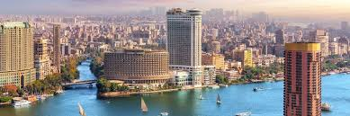
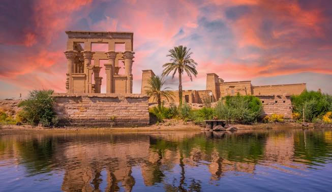
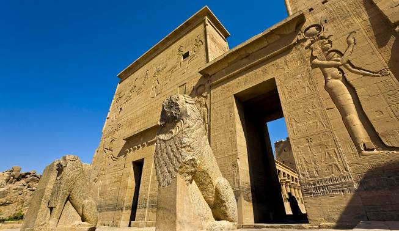
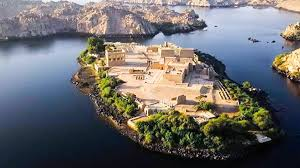

Historic Cairo is one of the exceptional cities in the world, characterized by the extraordinary survival of its architectural, artistic and urban heritage, which fully expresses its long history and the diversity of its values. Its siting at a historic crossroads of international trade routes from Europe, Asia and Africa fostered its prosperity as a political, cultural and economic capital, a destination for scholars and a stop on major pilgrimage routes. The period between the 9th and 15th centuries – also known as the Islamic Renaissance – was a particularly golden age for the city, when pioneering scientists, doctors, astronomers, theologians and writers carried an influence and stature that stretched well beyond the Islamic World. Historic Cairo still reflects its complex ‘medieval’ urban layout, which was respected and enhanced in later eras, to reflect is role as a political capital and to accommodate population growth
Read more   Arabic: Jazīrat Fīlah (“Philae Island”) or Jazīrat al-Birba (“Temple Island”) Travel down the Nile to discover important ancient Egyptian cultural sites such as the Pyramids of Giza1 of 2 Travel down the Nile to discover important ancient Egyptian cultural sites such as the Pyramids of GizaA discussion of some of the most important sites associated with ancient Egypt. See all videos for this article Philae 2 of 2 Philae Philae, island in the Nile River between the old Aswan Dam and the Aswan High Dam, in Aswān muḥāfaẓah (governorate), southern Egypt. Its ancient Egyptian name was P-aaleq; the Coptic-derived name Pilak (“End,” or “Remote Place”) probably refers to its marking the boundary with Nubia. The conventional name (Philae) is Greek, but locally the site is known as Qaṣr Anas al-Wujūd, for a hero of The Thousand and One Nights. Before its gradual submergence in the reservoir created by the old Aswan Dam after 1902, the alluvium-covered granite rock of Philae, 1,500 by 490 feet (460 by 150 metres), had always been above the highest Nile floodings. Accordingly, it attracted many ancient temple and shrine builders. Philae, Abu Simbel, and other nearby ruins were collectively designated a UNESCO World Heritage site in 1979. Hall of Nectanebo I Hall of Nectanebo IHall of Nectanebo I, formerly on the island of Philae, currently on the island of Agilkia near Aswān, Egypt. From early Egyptian times the island was sacred to the goddess Isis; the earliest structures known are those of Taharqa (reigned 690–664 bce), the Cushite 25th-dynasty pharaoh. The Saites (664–525 bce) built the earliest-known temple, found dismantled and reused in the Ptolemaic structures. Nectanebo II (Nekhtharehbe [reigned 360–343 bce]), last pharaoh of the 30th dynasty and last independent native ruler of Egypt prior to 1952, added the present colonnade. The complex of structures of the Temple of Isis was completed by Ptolemy II Philadelphus (reigned 285–246 bce) and his successor, Ptolemy III Euergetes (fl. 246–221 bce). Its decorations, dating from the period of the later Ptolemies and of the Roman emperors Augustus and Tiberius (30 bce–37 ce), were, however, never completed. The Roman emperor Hadrian (reigned 117–138 ce) added a gate west of the complex. Other small temples or shrines dedicated to Egyptian deities include a temple to Imhotep and one to Hathor, as well as chapels to Osiris, Horus, and Nephthys. The Temple of Isis continued to flourish during Roman times and was not closed until the reign of Justinian I (527–565 ce). Late in Justinian’s reign the temple was converted into a church, and two other Coptic churches were built in the still-prosperous town
Read more   